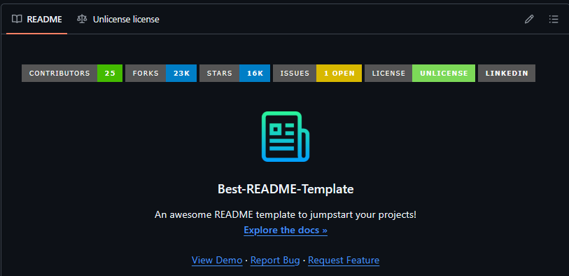

01
Documentation
repo-docs-builder
A repository that reads top to bottom like somebody meant it.
- Layout: app under
src/orsite/, root stays docs and meta - A docs tree wired with down-links and up-links
- A house-style README at every level, not just the root
- A humanizer pass over every sentence of prose
- Renders natively in both GitHub and Obsidian